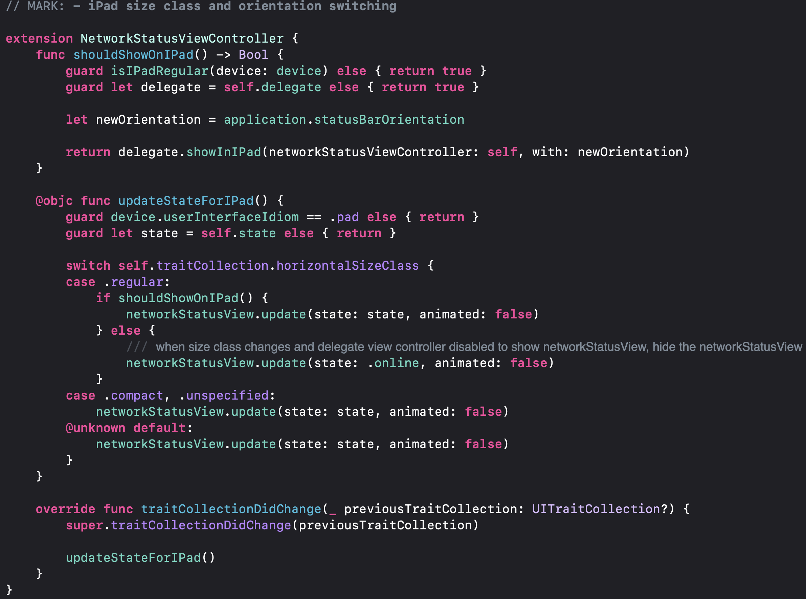
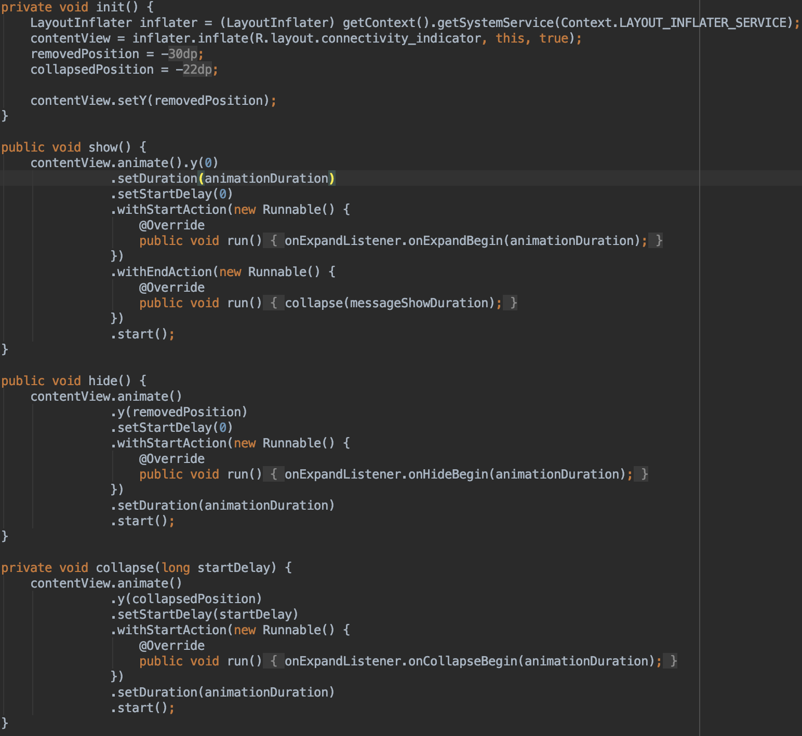
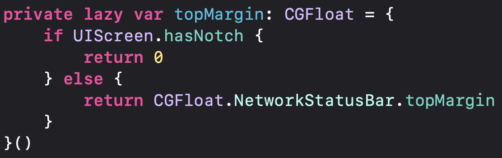

The first important thing to notice is that Wire doesn’t use the default elements of iOS or Android. In other words, Wire had made its own design of the main elements of the app. The design of the app is almost identical in both apps and doesn’t follow any of the design metaphors. However, it looks that try to follow the iOS design metaphor, and set aside Material Design. To avoid issues in the UI Wire make this all programmatically. In other words, the don’t use the storyboard or SwiftUI. This can be because they started doing the app before this was an option, especially the SwiftUI that was released a few weeks ago. Also, it is important to notice that the app just allows being in portrait mode in phones. Just allow being in landscape if it’s an iPad or tablet. Here is the example code that allows shows a network status bar on iPad depending on the orientation:
Also, the following code shows how does Wire knows the orientation of the device.
The app works pretty similarly to other messaging apps. But as mention in Design Thinking page, Wire provides some extra functionalities that other messaging apps don’t have. To access almost all of these functionalities there is a bar at the bottom of the screen, or over the keyboard when shown. Something to notice is that the edit of text (Bold, Italic, etc) is not available in Android in the version tested. The user interfaces of these functionalities are shown below.


As mention before , to avoid issues in the UI Wire make this all programmatically. Having this in mind Wire takes some desitions of how to change the constraints fo the UI to make it look according to the design and screen size. For this, Wire has to know some information about the phone: the screen size. It’s important to mention that the latest models of the iPhone have a notch on the upper side of the screen. Wire changes the constraints of the elements in the UI depending on the existence of this notch. The code that does this is shown below:
Finally, something that is related to usability and good practices is that Wire only asks for permission when needed. For example, when the user wants to send a voice message Wire asks for microphone permission. Wire doesn’t ask for this when the app it’s first opened, just when they need to ask it. This is important to the users because when the apps ask for permissions it’s better to show and prove why the app needs that permission, and let the user decide if he wants to give the permissions.

As seen in the image, the label of the buttons “Forgot password” and “Enterprise login” are one over the other. This may be because the labels are too large in Spanish or because the constraints didn’t consider this as a possibility.